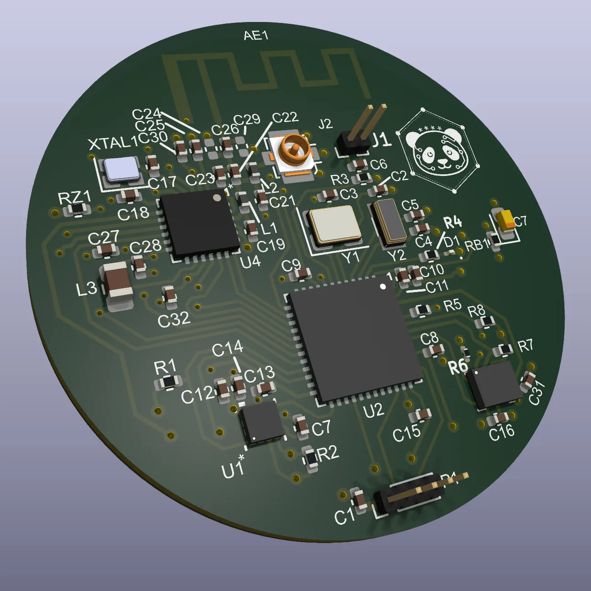
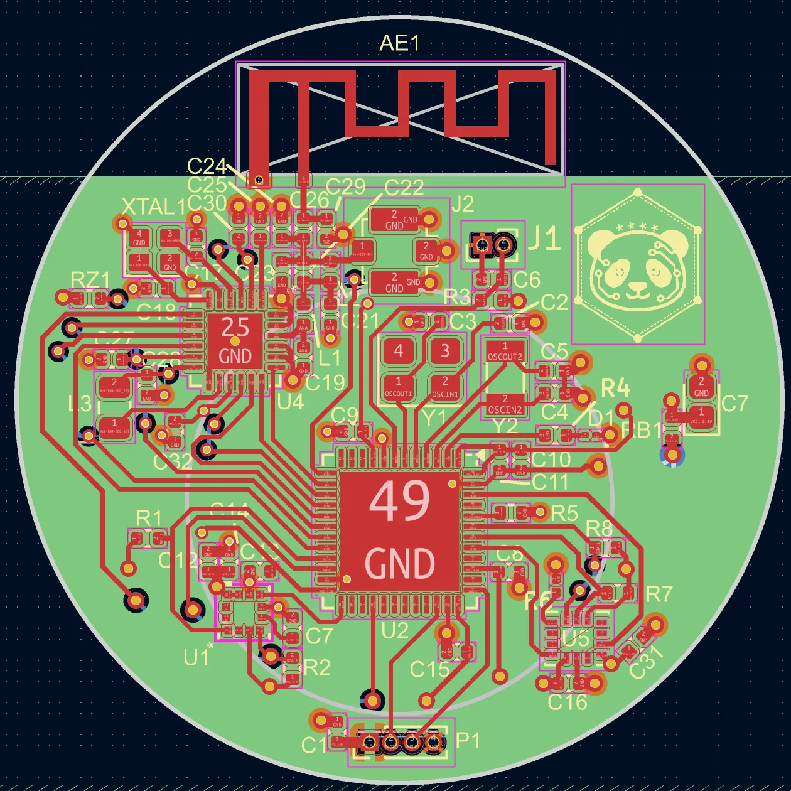

Joint Bluetooth and MIOTY Localisation Module
A coin-cell BLE + mioty localization tag combining precise short-range tracking with long-range fallback — one 2.4 GHz transceiver, motion-gated power, and a 9-axis IMU on a custom circular PCB.
The Coverage Gap
Most asset-tracking tags are built around a single trade-off. BLE tags are cheap and accurate when a receiver is nearby — but the moment the tag drifts out of range, it goes dark. Long-range IoT radios solve coverage, but at the cost of energy and precision. This project asks a different question: what if one tag could do both on a single radio? The result is a joint BLE + mioty module that transmits frequent BLE advertisements for precise tracking near infrastructure, and occasional mioty telegrams for long-range fallback everywhere else — both from the same 2.4 GHz front end.
Two Modes, One Radio
mioty is built on Telegram Splitting (ETSI TS-UNB): instead of one continuous packet, it chops messages into small sub-packets scattered across time and frequency. A receiver needs only a fraction of them to reconstruct the message — giving mioty its robustness and range. The novelty here is bringing that approach onto the same 2.4 GHz front end as BLE. BLE handles the common case with ~4 Hz three-channel hops for fine-grained tracking; mioty handles the fallback with infrequent split-telegrams that stay linked even when BLE coverage is absent. The two are complementary, not redundant — and both share a single SX1280 transceiver and antenna.
Module Architecture
The whole design bends toward one constraint: run from a CR2032 coin cell. The Semtech SX1280 handles both radio roles from a single 2.4 GHz front end. The STM32F103CB orchestrates everything — building BLE advertising packets, driving the mioty telegram sequence, reading the IMU, and managing sleep. A 9-axis IMU (TDK ICM-45686 + ST IIS2MDCTR) does double duty: its hardware wake-on-motion interrupt keeps the STM32 in deep sleep when the tag is stationary, and its motion data feeds the localization layer for dead-reckoning between radio fixes.
The Board ● Complete
A custom four-layer PCB designed in KiCad — a compact round board sized to sit over a coin cell. The stackup gives the 2.4 GHz signals a clean reference plane and keeps the antenna matching network tight. The design is complete and fabricated; the bill of materials is deliberately small.
Bringing Up the Radio ● In Progress
The firmware is written in C against the STM32 HAL. The BLE path is working and verified, the tag is discoverable on standard scanners, confirmed in nRF Connect and Bluetooth LE Explorer. The SX1280 is configured for BLE at 1 Mbps with Gaussian shaping at +13 dBm, transmitting in Apple iBeacon format across all three advertising channels at ~4 Hz. Each iBeacon payload encodes a zone (Major field), an identity (Minor field), and a calibrated TX-power byte for distance estimation. The mioty transmit path, generating the split-telegram sub-packet sequence on the same transceiver, is the current active focus. Motion-gated power is central: the IMU's hardware wake-on-motion interrupt keeps the STM32 in deep sleep when the tag is stationary, ramps advertising back up the instant movement is detected, and provides dead-reckoning hints to the localization layer.
From Signals to a Map ● Planned
Hardware that transmits is only half a localization system. The BLE advertisements already carry the hooks: iBeacon Major and Minor fields name a tag's zone and identity, and the calibrated TX-power byte lets receivers estimate distance from RSSI. The planned localization layer will fuse fine-grained BLE measurements where available and coarse mioty presence where not, with the IMU's dead-reckoning bridging the gaps. The final output is a Leaflet-based web interface that places each tag on a live map, BLE fixes shown as tight rings, mioty-only fallback as wider uncertainty circles, so an operator immediately sees which tags are pinned down and which are in coverage-fallback mode.
Why It Matters
The appeal of this design is its economy. A single transceiver, a small microcontroller, a 9-axis IMU, and a coin cell, and from that minimal hardware comes a tag that is precise when it can be and findable when it can't. There is no second radio to power, no gateway-density assumption baked into the deployment, no hard coverage edge where tracking simply stops. Motion-gated transmission means no wasted energy reporting a position that hasn't changed. The build is active and moving in stages: the board is complete and assembled, the BLE firmware chain is working, and the mioty transmit path, localization layer, and Leaflet visualization are next.
This work is being carried out at the Institute for Information Technology (LIKE), FAU Erlangen-Nürnberg.
The Board, In the Flesh
The design verified in silicon — KiCad ray-trace render and the full 2D copper and silkscreen layout as produced.


.webp)